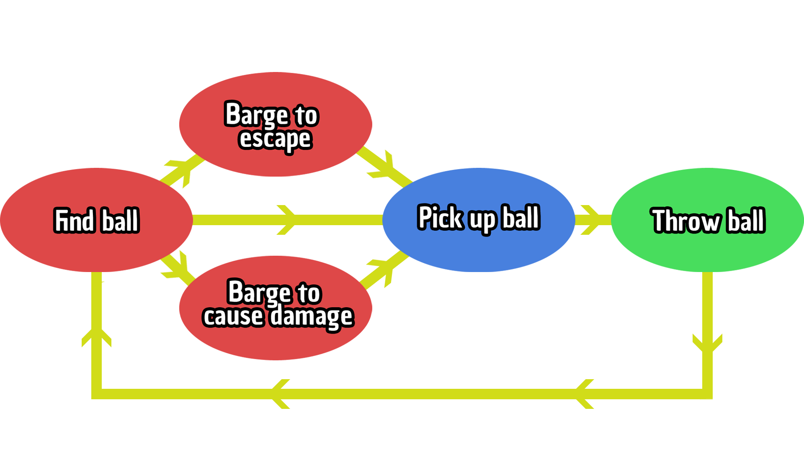

The barge began as a simple dodge mechanic. After multiple iterations, it became a fleshed out and main mechanic in the game.
Due to the fast pace nature of Dodgebrawl, the odds can be in your favour one second. Then against you the next. We felt that when the players are unequipped with a ball, they needed a feint or 'dodge' ability to balance the game and offer a 'risk/reward' clutch that required actions to be made at the right second. With emphasis on chaotic gameplay, the idea of having the 'dodge' became a barge which can knock other players down, causing them to drop their ball if they are holding one, but would not remove a life from them. This gives the player the ability to be both offensive and defensive depending on playstyles and situations, also adding an extra layer of threat to all players. The barge can be used to cover distance and reach a ball before the other players, but can be countered quickly by receiving a barge themselves.
To create the barge, constant playtesting and adjustments were essential. Initially, the barge's effectiveness was solely based on the player's movement stat, resulting in slower players having a shorter barge. While we maintained the barge's connection to movement, we believed it was important to highlight its significance on the player's stats. The timing of the barge can have a significant impact on the game, but we also wanted to ensure it wasn't too dominant, so we introduced a cooldown period. This prevented players from overusing the barge to cover ground and knock over opponents. Using the barge too early could lead to punishment by another player who was anticipating the move, adding an element of unpredictability and strategy to the game. As the scripter, my responsibility was to fine-tune the barge's values to achieve an optimal balance between fun and skill-based gameplay.